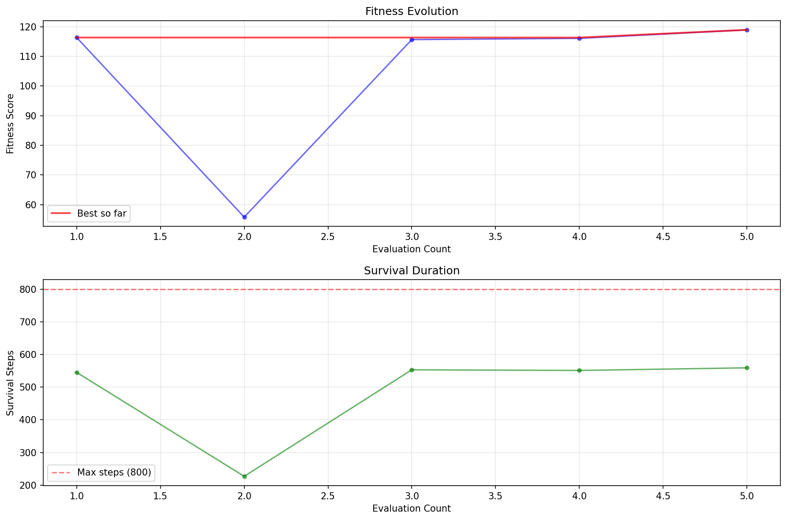
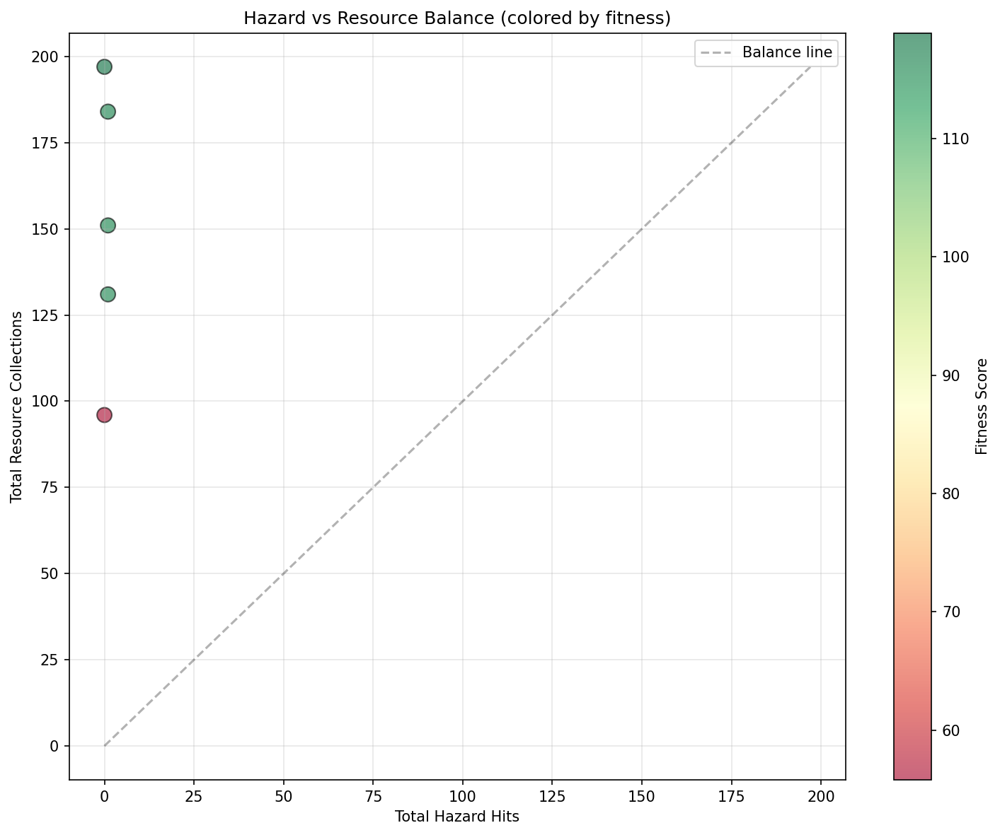
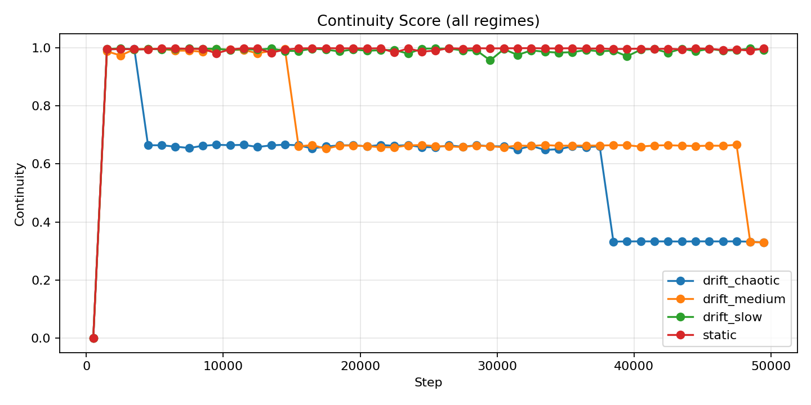

1. Overview: What is inZORi?
inZORi is an operational emergent intelligence system in which population-level behavior arises over time from autonomous entities interacting with a changing environment. The system is not defined as a reward-optimization problem and does not aim to converge to a single fixed solution. Instead, it is governed by an implicit viability constraint: entities that cannot sustain themselves disappear, while those that adapt persist and reproduce. In this framing, “intelligence” is treated as an observable, population-level phenomenon that depends on historical interaction and selection, rather than a policy trained toward a predefined objective.
Scenario 1: Adaptation to a dynamic environment
Setup
A population of 40 virtual organisms in a 2D environment that periodically alternates between two worlds. Each organism has a genome controlling risk sensitivity, step size, memory, and exploration tendencies.
- World A – Food bottom‑left, danger top‑right
- World B – Food top‑right, danger bottom‑left
Important: Organisms do not know the world will switch. There are no instructions on how to survive — only persistence over time.
Emergent result
Scenario 2: Emergence of social behavior
Setup
A population with genomes encoding intelligence (IQ). We introduced only two subtle factors reflecting real constraints:
- Higher‑IQ individuals start reproduction later (education delay)
- Higher‑IQ individuals incur a slightly higher “opportunity cost” per child
No explicit rule specifies how many children a pair should have. We only change timing and opportunity cost.
Emergent result
Additional observations from 20‑seed runs:
- The effect is strongest at extremes: very high‑IQ pairs have ~16–18% fewer children than very low‑IQ pairs.
- Medians remain relatively balanced — the shift appears in the tails, not the whole population.
- Small biases (timing + opportunity cost) accumulate and produce a stable long‑term gap.
- In tests with periodic culling, the M/F ratio drops immediately after the event and normalizes over time.
- Culling reduces total births and increases volatility of the adult M/F ratio.
- Average age at death decreases, especially for males, under culling scenarios.
- Extra‑pair birth rate remains stable (no significant change between cull and no‑cull).
- Fertility per mother is slightly higher without culling, while total population remains similar.
Scenario 3: Versatility – Same engine, different problems
inZORi is not specialized for a single problem. The same core code can:
Maze solving
Genomes evolve navigation and exploration strategies to find exits from complex mazes without a predefined map.
Tools Fountain
Genomes evolve spatial strategies to locate and prioritize useful tools and points of interest in a structured environment.
Space colonization
Genomes develop survival strategies for Martian colonies, managing limited resources and variable risks.
Scenario 4: inZORi prioritization for TESS
inZORi analyzed the full set of 13,000 TESS signals and produced a short list of transit candidates. The score reflects clarity, regularity, stability, and low noise — it does not confirm discoveries; it prioritizes what is worth follow‑up.
Candidate examples (quality, risk):
- tess2025258001959-s0097-0000000300969635-0294-s_lc – 0.868, 0.136
- tess2025258001959-s0097-0000000055497281-0294-s_lc – 0.844, 0.163
- tess2025258001959-s0097-0000000259589049-0294-s_lc – 0.781, 0.227
Scenario 5: Adaptive robotics – navigation in a changing environment
Setup
A robot navigates a 100×100 grid for 800 steps, split into 5 phases where hazards, resources, and sensor noise change dynamically. There is no map and no global reward — only survival pressure.
- Mobile hazards: ~15% change probability per step
- Relocating resources: ~20% volatility
- Variable sensor noise: 30–90% reliability
- Abrupt transitions every 160 steps
Results
Key visualizations (robotics test):
Phase‑colored trajectory

Left: the robot’s path on the grid, colored by phase (0–4). A central cluster appears early (cautious exploration), followed by a gradual drift toward the top‑right corner where resources are more profitable in later phases. Right: energy remains near the top during early phases, with short dips when crossing risky zones; the final sharp decline indicates energy depletion near the end of the run.
Fitness evolution
Top: fitness across successive evaluations; the red line marks “best so far”. A dip at evaluation 2 signals a weak strategy, followed by rapid recovery in evaluations 3–5 and stabilization near ~118–120. Bottom: survival duration rebounds after evaluation 2 and stabilizes around ~550–560 steps, indicating consistent adaptation without reaching the full 800 steps.
Survival by phase

Left: average survival steps by phase (with variation across runs). Phases 0–1 show high survival, phase 2 remains solid despite severe sensor noise, while phase 3 drops sharply — indicating maximal pressure from hazard barriers and dispersed resources. Right: distribution of adaptation scores; the mean (~0.744) indicates balanced adaptation across phases, not just a single phase.
Hazard–resource balance
Each point is a run: X‑axis = hazard hits, Y‑axis = resources collected. The dashed line marks an ideal balance (resources rising with hazard exposure). Points cluster near X=0 and high Y: good strategies avoid hazards while still collecting resources. Greener colors indicate higher fitness, associated with minimal risk and high resource gain.
Scenario 6: SDC_v1 – What ZOR preserves when the world drifts slowly
Goal
Test what ZOR preserves when the world changes slowly. No optimization, no RL, no policy updates. We measure behavioral continuity under slow drift and collapse under chaotic drift.
Setup
A 2D environment with food and danger zones (Gaussian fields). Zone centers, amplitude, and spread can drift over time. Population (e.g. 12–40 organisms) survives on energy; genomes control risk sensitivity, step scale, jump chance, memory. Metrics are computed over sliding windows (e.g. 1000 steps).
- static – baseline, no drift; zones fixed
- drift_slow – slow sinusoidal drift of zone positions and shape
- drift_medium – faster sinusoidal drift
- drift_chaotic – rapid random walk of zones (negative control)
Metrics (per window)
Continuity score – how stable behavior is across the window. Tradition index – persistence of behavioral signature. Drift tracking lag – how well the population follows moving zones. Diversity under drift – maintained genomic/behavioral diversity. Population stability – variance of population size.
Results (from SUMMARY_REPORT – mean across windows)
Key visualizations (SDC_v1):
Continuity score over time
Continuity remains high under static and slow drift; it drops under medium and collapses under chaotic drift.
Drift tracking distance
How well the population tracks moving food/danger zones across regimes.
Tradition reappearance timeline

When behavioral signatures reappear over time under drift.
Static vs chaotic

Contrast between stable behavior in static/slow drift and collapse under chaotic drift.
What makes inZORi distinctive?
- Emergent behaviors – Observed across scenarios (see Scenarios 1–6)
- Demographic-style patterns – Scenario 2 (IQ & fertility) and related runs report outcomes analogous to phenomena discussed in population studies
- Same engine, multiple domains – Evaluated in distinct scenario families (Scenarios 1–6) by changing environment and conditions only
- Documented parameters and metrics – Settings and emergent patterns are reported with tables and plots (Scenarios 1–6)
inZORi instantiates evolutionary mechanisms (variation and selection) in a persistent operational setting.